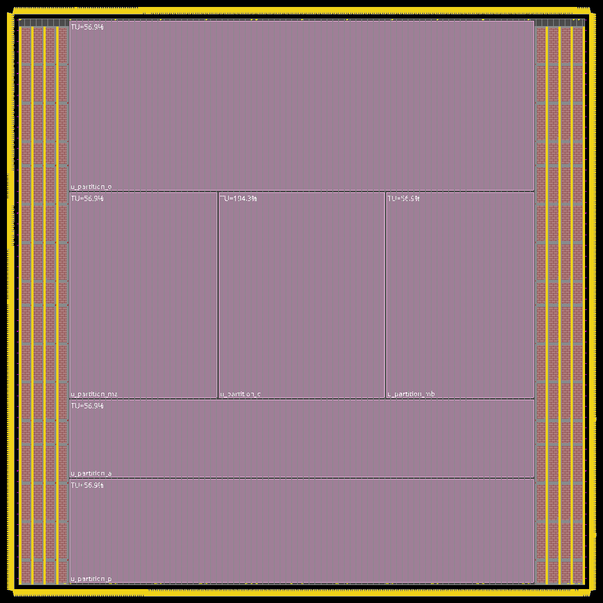

NPU · Physical Design · ASIC
NVIDIA NVDLA RTL-to-GDSII
Implemented and evaluated an open-source NVIDIA deep-learning accelerator through synthesis, timing analysis, power analysis, floorplanning, placement, routing, and physical verification in a 12-nm FinFET flow.
NVDLA (NVIDIA Deep Learning Accelerator) is an open-source hardware accelerator architecture for deep learning inference. I took this on independently — outside of coursework and outside supervised research — and carried the open-source RTL through a full physical design flow in a 12-nm FinFET process, rather than stopping at synthesis or simulation.
The work spanned synthesis, timing analysis, and power analysis at the netlist level, then moved into physical implementation: floorplanning, placement, routing, and physical verification, treating each step's timing and congestion feedback as an input to the next.
Because NVDLA is a substantially larger and more structurally complex design than a typical class-project block, a significant part of the work was in managing the flow itself — partitioning the problem, debugging RTL-to-netlist mismatches, and iterating on timing closure across a design with many more instances and nets than a small benchmark circuit.
| Context | Self-directed independent project |
|---|---|
| Design | NVIDIA Deep Learning Accelerator (NVDLA), open-source |
| Process node | 12 nm FinFET |
| Flow stages | Synthesis · Timing analysis · Power analysis · Floorplanning · Placement · Routing · Physical verification |
Floorplan
01 / PHYSICAL DESIGN
The design was partitioned into separate placement regions before detailed placement, each closed independently against its own utilization target (TU) before final assembly — visible here as the six labeled partitions inside the core area, bounded by the I/O pad ring and power distribution rings.
Flow
02 / STAGESSynthesis
Mapping the open-source NVDLA RTL to a 12-nm FinFET standard cell library.
Timing & power analysis
Characterizing netlist-level timing paths and power at the block level.
Floorplanning
Partitioning and placing macro and logic regions across the die area.
Placement & routing
Detailed placement and routing of standard cells and interconnect.
Physical verification
Checking the implemented layout for design-rule and connectivity correctness.
Synthesis results
03 / GENUSSynthesized in Genus 23.14 against the GF12LP+ sc9mcpp84 low-Vt library at the slow-slow corner (0.81 V, 125 °C), with physical-library area estimation and global interconnect. The mapped design comes out at 6,892,634 instances and 4.96 mm² of total area, drawing 7.79 W.
The area is not distributed the way the instance counts suggest. u_partition_c holds 13.2% of the instances but 28.3% of the area — the largest of the six — because it contains CBUF, the convolution buffer. CBUF is 94,024 instances, 1.4% of the design, yet occupies 0.93 mm², nearly a fifth of the whole chip, since it is built almost entirely from SRAM macros rather than standard cells.
That shows up again in the cell-area breakdown: 128 SRAM macro instances — 96× sram2p_256x144 and 32× sram2p_256x80 — account for 24.2% of all cell area. Power splits the other way: internal switching dominates at 4.52 W (58%), net switching contributes 3.01 W (39%), and leakage is 0.26 W (3.4%).
| Tool | Genus 23.14-s090_1 |
|---|---|
| Library | sc9mcpp84_12lpplus_base_lvt_c14 |
| Corner | sspg_sigcmax_max, 0.81 V, 125 °C |
| Cell area | 3.54 mm² |
| Net area | 1.42 mm² |
| SRAM macros | 128 instances, 24.2% of cell area |
| Partition | Instances | Share | Total area (mm²) | Share | Power (W) |
|---|---|---|---|---|---|
| u_partition_o | 1,942,960 | 28.19% | 1.215 | 24.5% | 2.130 |
| u_partition_p | 1,245,049 | 18.06% | 0.751 | 15.1% | 1.436 |
| u_partition_a | 975,643 | 14.15% | 0.562 | 11.3% | 0.916 |
| u_partition_ma | 910,060 | 13.20% | 0.511 | 10.3% | 0.947 |
| u_partition_mb | 910,060 | 13.20% | 0.511 | 10.3% | 0.974 |
| u_partition_c | 908,862 | 13.19% | 1.405 | 28.3% | 1.390 |
| NV_nvdla | 6,892,634 | 100% | 4.960 | 100% | 7.792 |